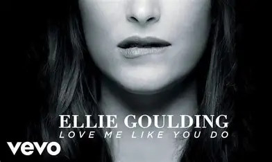

Love Me Like You Do
Song by Ellie Goulding
Original Video

You're the light, you're the night
You're the colour of my blood
You're the cure, you're the pain
You're the only thing I wanna touch
Never knew that it could mean so much, so much
You're the fear, I don't care
'Cause I've never been so high
Follow me through the dark
Let me take you past our satellites
You can see the world you brought to life, to life
So love me like you do, lo-lo-love me like you do
Love me like you do, lo-lo-love me like you do
Touch me like you do, to-to-touch me like you do
What are you waiting for?
Fading in, fading out
On the edge of paradise
Every inch of your skin is a Holy Grail I've got to find
Only you can set my heart on fire, on fire
Yeah, I'll let you set the pace
'Cause I'm not thinking straight
My head's spinning around, I can't see clear no more
What are you waiting for?
Love me like you do, lo-lo-love me like you do (like you do)
Love me like you do, lo-lo-love me like you do
Touch me like you do, ta-ta-touch me like you do
What are you waiting for?
Love me like you do, lo-lo-love me like you do (like you do)
Love me like you do, lo-lo-love me like you do (ye-yeah)
Touch me like you do, to-to-touch me like you do
What are you waiting for?
I'll let you set the pace
'Cause I'm not thinking straight
My head's spinning around, I can't see clear no more
What are you waiting for?
Love me like you do, la-la-love me like you do (like you do)
Love me like you do, la-la-love me like you do (ye-yeah)
Touch me like you do, ta-ta-touch me like you do
What are you waiting for?
Love me like you do, la-la-love me like you do (like you do)
Love me like you do, la-la-love me like you do (whoa)
Touch me like you do, ta-ta-touch me like you do (ah)
What are you waiting for?
Songwriters: Max Martin, Ilya Salmanzadeh. For non-commercial use only.